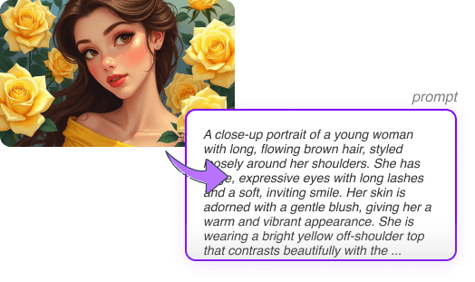
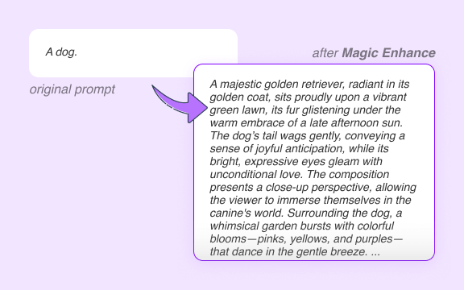
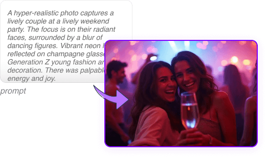
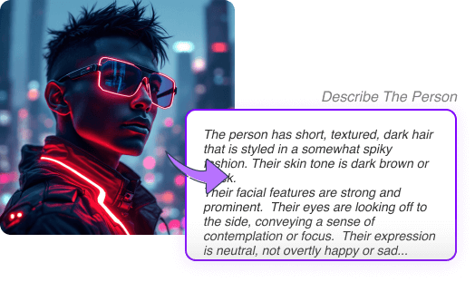

AI 기반 이미지 프롬프트 도구
이미지 생성 여정의 모든 측면을 다루는 완벽한 AI 도구 모음

이미지 프롬프트 생성기
AI 이미지 생성을 위한 이미지 프롬프트 생성기로 창작력을 높이세요. 간단한 아이디어를 상세하고 AI에 최적화된 프롬프트로 변환하세요. 영어 실력과 상관없이 누구나 사용 가능합니다.
프롬프트 생성하기


이미지 프롬프트에서 영감 얻기
AI가 생성한 이미지로 시각적 영감의 세계를 탐험하세요

![A fantastical cityscape with buildings that twist and turn. Doodle art style. Emphasis on playful, spontaneous designs and whimsical characters. Use of intricate patterns and repetitive elements to create visual interest. Combination of childlike simplicity with detailed illustrations. Can be black and white or colorful, allowing for creative expression. Incorporation of various themes, such as nature, fantasy, and everyday life. Freeform and non-representational, encouraging imagination and personal style. Often serves as a form of relaxation and mindfulness.](ad_ic_img_2024-09-19_1726732115272_4506.webp)


자주 묻는 질문
우리 서비스에 대한 일반적인 질문에 대한 답변을 찾아보세요
이미지 프롬프트는 AI에게 그림을 그리도록 지시하는 일련의 설명이나 단어입니다. 장면이나 물체를 묘사하는 것처럼 AI에게 어떤 이미지를 원하는지 알려줍니다. 이미지 프롬프트를 사용하면 AI가 여러분의 아이디어나 요구에 맞는 이미지를 만들도록 도울 수 있습니다. 이미지 프롬프트를 통해 여러분의 상상력을 쉽게 디지털 아트로 바꿀 수 있어, 누구나 창의적 표현을 할 수 있게 됩니다.
이미지 프롬프트는 AI 모델이 특정 이미지를 생성하도록 안내하는 중요한 역할을 합니다. 원하는 이미지의 내용, 스타일, 세부 사항을 정의하는 지시 역할을 합니다. 프롬프트는 AI가 사용자의 의도를 이해하는 데 영향을 미치고, 생성된 이미지의 품질과 정확성에 영향을 주며, 사용자의 비전을 시각적 형태로 변환하는 데 도움을 줍니다.
이미지 프롬프트에는 일반적으로 주요 주제에 대한 설명, 배경이나 환경, 원하는 예술 스타일이 포함됩니다. 종종 색상 구성, 조명 조건, 이미지의 전반적인 분위기나 분위기를 지정합니다. 주제의 특정 동작, 자세, 또는 독특한 특징과 같은 추가 세부 사항이 포함될 수 있습니다. 이미지 프롬프트가 더 자세하고 구체적일수록 생성된 이미지가 사용자의 비전과 더 가깝게 일치할 것입니다.
네! 우리는 코어 기능에 대한 무료 접근을 제공합니다: 모든 텍스트-투-프롬프트 도구는 완전히 무료이며, 무료 사용자는 이미지-투-텍스트 도구를 하루에 5번 사용할 수 있습니다. 또한, 무료 사용자는 이미지 생성을 위해 2개의 무료 크레딧을 받습니다. 추가 사용을 원하시면 프리미엄 플랜으로 업그레이드하거나 크레딧을 별도로 구매할 수 있습니다.
저희는 사용자 개인 정보를 매우 중요하게 생각합니다. 플랫폼에 업로드된 모든 이미지는 실시간으로 처리되며 서버에 저장되지 않습니다. 이미지는 일시적으로 프롬프트를 생성하는 데만 사용되며 그 후 즉시 삭제됩니다. 사용자의 개인 정보와 데이터 보안이 저희의 최우선 과제입니다.
이미지 프롬프트를 사용하려면 먼저 만들고 싶은 이미지를 명확하게 설명하는 텍스트를 작성하세요. 이미지 프롬프트를 ImagePrompt.org나 Midjourney와 같은 AI 이미지 생성 도구에 입력하고 이미지를 생성하세요. 결과를 개선하기 위해 프롬프트의 다양한 표현과 세부 사항을 실험해보세요.
네, 이미지 프롬프트는 AI 이미지 생성기마다 다를 수 있습니다. 프롬프트 작성의 기본 원칙은 비슷하지만, 다른 도구들은 특정 요구 사항이나 강점이 있을 수 있습니다. 일부 도구는 특정 문법 구조를 선호하거나, 특정 키워드에 더 민감하거나, 특정 예술 스타일에 뛰어날 수 있습니다. 사용 중인 특정 AI 도구의 기능과 한계를 이해하는 것이 중요합니다.
일반적인 이미지 프롬프트 구조에는 다음과 같은 것들이 있습니다: '[주제]의 사실적인 이미지, [배경]에 있는, [스타일] 미학', '[주제]의 초현실적이고 꿈같은 이미지, [배경]에 있는', '[주제]의 고해상도 상세 이미지, [배경]에 있는, [세부사항] 포함', '[주제]의 로우폴리 3D 이미지, [배경]에 있는, [세부사항] 포함'.
ImagePrompt.org는 사용자들이 효과적이고 영감을 주는 이미지 프롬프트를 만들 수 있도록 돕는 것을 목표로 합니다. 이미지 프롬프트 작성을 위한 도구와 가이드를 제공하여 사용자들이 독특하고 개인화된 AI 생성 이미지를 만들 수 있게 합니다. 우리는 상상력과 시각적 창작 사이의 간극을 좁혀, 사용자들이 AI 생성 아트워크를 통해 자신의 아이디어를 실현할 수 있도록 노력합니다.